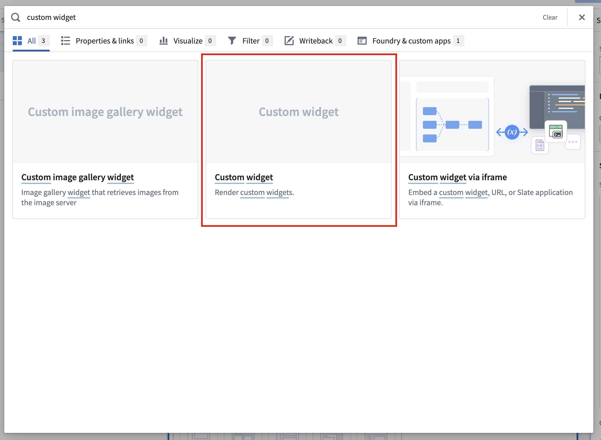

To embed a widget in Workshop, start by adding a custom widget component to your Workshop:

In the new Widget setup tab, find Select to select the widget set and version to use.
:::callout{theme="neutral"} A brand-new widget must be published at least once before the new widget appears in the widget set and version selector. After the new widget's first release, you can use dev mode to preview unpublished changes to the widget's code, parameters, and events directly in Workshop. :::
You can bind the parameters your widget uses to Workshop variables to allow passing data in and out of the Workshop state. For information on the different parameter types available, see parameters and events.
You can use events to allow widgets to update the parameter values. You can also bind these events to Workshop events such that when a widget fires an event, it will also trigger a Workshop event.
Widget parameters and events can be bound to Workshop variables and events in the Widget setup panel:
By default, custom widgets reload when they are removed from the page and later displayed again. To preserve local state across navigation, configure widget display optimization to keep the widget mounted. You can also store custom widget data in Workshop variables passed to the widget.
For help with browser performance issues, crashes, or unexpected behavior, see Troubleshooting.